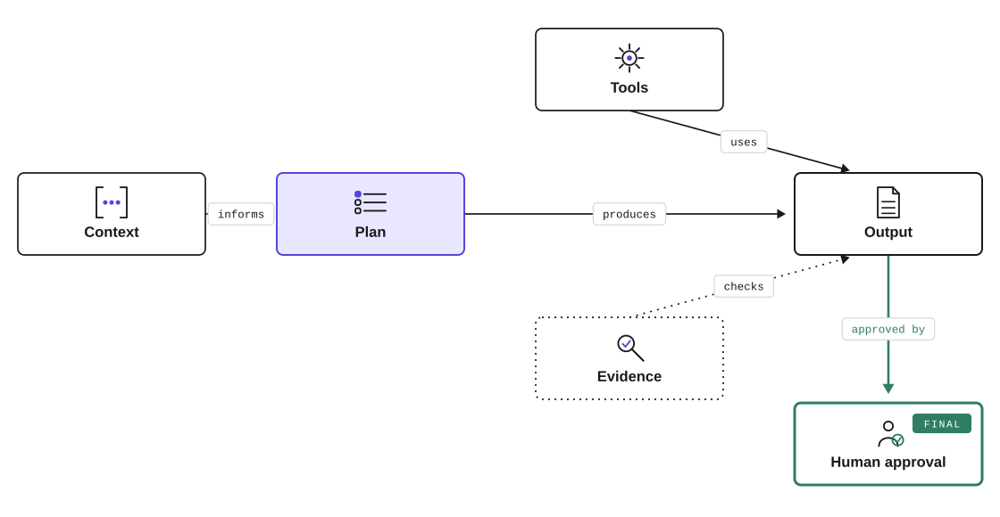

01
Start and build
Pressure-test an idea, research a market, organize a launch, and make entrepreneurship less lonely.
AgentX AI CourseLive online via Zoom · Join from anywhere
Go beyond ChatGPT. Learn to choose the right model, then build a portable team of personal agents that can research, organize, plan, remember, and move real work—with you in control.
$995 launch tuitionThrough September 13 · Maximum 20
9 live sessions
20 participant maximum
1 working personal assistant
0 paid AI subscriptions required
Different lives. Same leverage.
The course starts with your real goals. You learn a method that can travel from a Monday-morning task to a once-in-a-decade decision.
01
Pressure-test an idea, research a market, organize a launch, and make entrepreneurship less lonely.
02
Turn recurring context, preferences, projects, and approved memory into a second-brain you can reach when you need it.
03
Compare large purchases, model a budget, organize portfolio research, and prepare better questions for a financial professional.
04
Organize documents and photos, plan travel, find discounts and club access, and keep family details easier to retrieve.
01/ 04Swipe or use the arrows
Build a budget, compare scenarios, organize finances, and structure portfolio research without outsourcing judgment or trades.
Research doctors and medical decisions, gather sources, and organize questions for qualified professionals—not diagnosis.
Compare cars and other large purchases, plan travel, shortlist places to go out, and find useful discounts.
Create a durable way to organize documents, photos, preferences, and the details your future self will want.
Agentic AI fundamentals
You learn what makes an agent different from a chatbot, how the parts work together, and where human judgment belongs. Then you make each part useful.
Explore the buildThe nine sessions move from the language engine to a personal assistant you can direct, check, and control. No coding knowledge is assumed.

AI beyond ChatGPT
Models will change. Your method should survive the next update. AgentX teaches you how to compare, route, verify, and carry a working agent from one model to another.
Course artifact 01
Goal
Compare three cars across five-year cost, safety, reliability, and fit.Evidence rules
Cite primary sources. Label estimates. Separate owner reports from verified facts.Approval gates
No purchase, contact, form, or financial decision. You review every recommendation.No paid AI subscription required. Core exercises use included or free access. ChatGPT and Claude remain optional, not prerequisites.
Four weeks · Nine sessions
Every evening has a visible finish line. The course compounds from a first safe experiment to a personal assistant with approved memory and a reachable interface.
Week 01
Compare leading and open models on one real task. Learn what changes, what holds, and how to choose.
Build a portable Agent Card, create a finished artifact, and identify what made the work better.
Week 02
Use goal, context, constraints, and desired output; then turn visual inputs into checked action.
Verify claims and map the parts of an agent: decisions, tools, memory, permissions, and stopping conditions.
Turn your Agent Card into a working assistant that can move between approved models and tools.
Week 03
Connect chosen sources, test retrieval, and see how grounded context changes the answer.
Retrieve an approved preference, correct one miss, and keep permission in a mission contract your assistant cannot override.
Week 04
Give one assistant an approved way to research, read, or create—then practice the recovery lane.
Complete a source-grounded capstone, test portability and retrieval, and leave with a departure plan.
Every session6:30–9:00 PM ET
Course datesOctober 5–27, 2026
FormatLive online · Zoom
Live online. Built for connection.
This is a high-touch working cohort—not a webinar or video library. Capped at 20, it gives every learner room to ask, build, share, and get unstuck.
Follow a live demonstration, work in guided breakout studios, and bring your screen into the conversation when you need help.
See how parents, caregivers, professionals, founders, and retirees apply the same method to very different lives.
Use a private cohort channel between sessions for questions, resources, progress, and recovery help.
Share what you built, learn from other approaches, and revisit class recordings and transcripts when you need them.
Online removes the commute. It does not remove the room.
Leave with something real
Configured around memory and context you approve, with a clear path for extending it.
A one-page model of the goal, inputs, tools, evidence, outputs, memory, and permission boundaries.
A research system that answers from sources you choose and shows where its claims came from.
A repeatable way to separate recommendations from claims, check sources, and fix weak work.
A permissions checklist and clear way to correct memory, tools, or connections when something misses.
A focused route for turning the course build into an everyday practice.
A credential for the work
Complete the Agentic AI Intensive and receive a named Certificate of Completion issued by AgentX AI Course. It records the live online program, October dates, completed work, and a unique credential ID.
Issued by AgentX AI Course. It documents course completion. It does not confer academic credit and is not a professional certification.

Executive judgment. Builder credibility.
Adam Behrman is an executive advisor on AI, automation, operating-model transformation, value realization, risk, and controls—and a hands-on builder of working AI assistants and agent workflows.
AgentX AI Course is an independent program. No university affiliation, accreditation, or transferable academic credit.
October cohort enrollment
One live online program. One high-touch, interactive cohort capped at 20. The experience stays personal; only the enrollment date changes tuition.
Launch
$995Enroll through Sep 13Standard
$1,250Sep 14–27Full
$1,495From Sep 28Launch tuition is available now.
Tuition includes nine live Zoom sessions, guided breakout studios, the private cohort channel, recordings and transcripts, the preflight clinic, course materials, guided setup, and a personalized AgentX Certificate of Completion.
Built for ambitious beginners
No prior AI, programming, or command-line experience is required. Core exercises require no paid AI subscription.
Camera use is encouraged, not required. A live online preflight clinic checks Zoom, course access, and the core tools before Session 1.
The practical questions
Yes. The course begins with an ordinary AI task and builds one capability at a time. You need everyday laptop comfort, not coding experience.
You will build one working personal assistant, one source-grounded second-brain, a portable Agent Card, a Personal Agent Map, and verification and permission methods.
It can help organize research, compare scenarios, surface sources, and prepare better questions. It does not replace a qualified financial, legal, or medical professional, diagnose conditions, or execute portfolio decisions.
The cohort is capped at 20. Each session combines live demonstration, four breakout studios of five, screen-sharing help, and time for direct questions. It is interactive by design.
Live online via Zoom from 6:30–9:00 PM ET. Enrolled learners receive private recurring access and preflight instructions by email.
No. Core exercises use included or free access. A free Google account is required. ChatGPT, Claude, and other paid plans are optional.
You will compare GPT, Claude, Gemini, Mistral, and open models such as Llama, Gemma, Qwen, and DeepSeek. You will not need eight accounts: some comparisons use a private multi-model lab or instructor demo.
Bring a current Mac or Windows laptop with a modern browser, reliable internet, working audio, and permission to install course apps. Zoom and the core tools are checked during preflight.
Yes. Instructor-led sessions are recorded for enrolled learners, with notice at the start of each session. Breakout rooms are not recorded by default. You control your camera and what you share on screen.
Yes. Learners who complete the course receive a named Certificate of Completion issued by AgentX AI Course with the program dates, completed work, and a unique credential ID. It does not confer academic credit and is not a professional certification.
Review the cohort details, complete secure payment through Stripe, and receive the onboarding and preflight steps by email.
Your next operating system